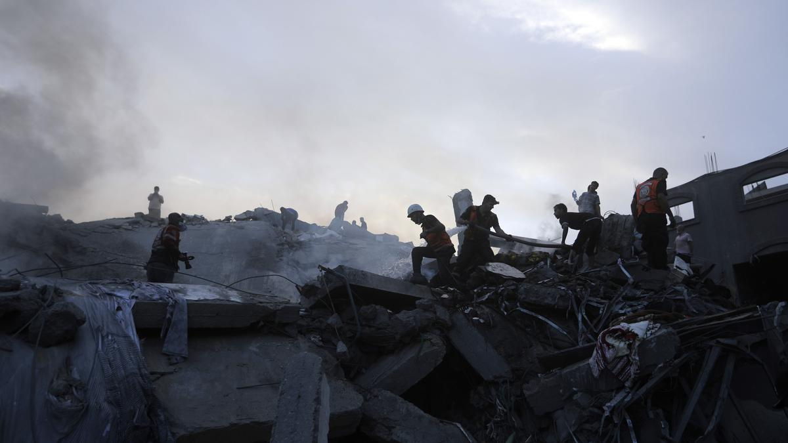

U.S. President Joe Biden threatens to veto Bill in Congress to provide $14.3 billion in aid to Israel
November 01st, 2023 06:40 am | Updated 12:03 pm IST
A barrage of Israeli airstrikes leveled apartment buildings in a refugee camp near Gaza City on Tuesday,and footage showed rescuers pulling men, women and children from the rubble. Israel said the strike destroyed a Hamas command centre set up in civilian houses and an underground tunnel network.
ALSO READ : Israel-Hamas war, Day 25 updateThe Israeli military said dozens of militants were killed Killed, including a key Hamas commander for northern Gaza.
Meanwhile, internet and phone networks were down across the Gaza Strip on Wednesday, the Palestinian telecommunications agency said, in the second such blackout in the besieged territory in less than a week. “To our good people in the beloved country, we are sorry to announce that communications and internet services have been completely cut off in Gaza,” the Palestine Telecommunications Company (Paltel) said on X.